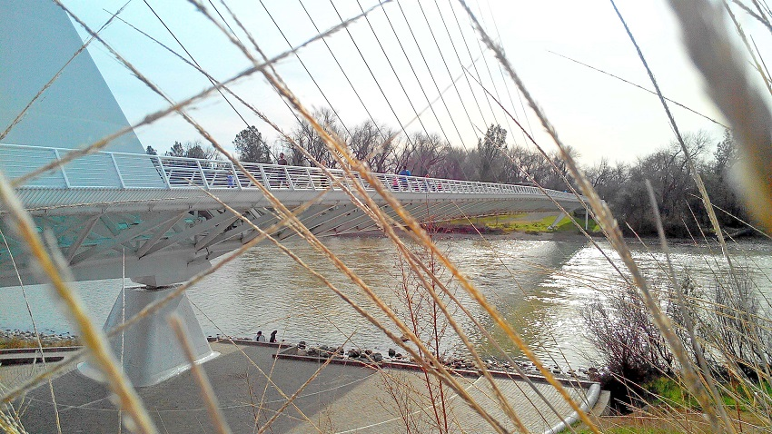

The Sacramento River Runs Through It - Explore the Trails

The Sacramento River, often referred to as the “river of gold,” is the largest river in California and travels 320 miles from the foot of Mount Shasta in the northern most part of California, to the San Francisco Bay. The town of Redding, the largest city north of Sacramento, sits right on the banks of this beautiful waterway, which meanders back and forth through out the town. Redding has built a first-class trail system along this river, incorporating almost 80 miles of paved and unpaved passageways, allowing people to walk, ride a bicycle or even skate these trails almost anytime of the year. From the great King Salmon, jumping and spinning in the air, migrating in numbers so large that most would not beleive their eyes, to the large pastures filled with deep purples and bright oranges from the native flowers, to the dark red, peculiarly gnarled bark of the local Manzanita trees standing against the backdrop of a Redwood forest mountainside, to the busy-ness of nature buzzing and chirping amongst the soft, sun-dried grasses gently undulating on a warm summer breeze, there is not a time of the year that the Redding trail system is not something spectacular to behold.
One of the best places to explore the river trail is near Turtle Bay Aquarium. It is a popular area for tourists and locals alike out for a light excursion, often with their dogs, to mingle with other dog-happy people.
Depending on the time of year, it is not uncommon to see sudden splashes of swimming Salmon right off the banks of the water, just a few feet from the trail. These huge, polka-dotted fish were just relaxing in the sun, bobbing up and down on the current, so close to shore that we could have wadded in the few feet and snatched them out with only our hands. In fact, November through December, the Sacramento river is host to the world's greatest Salmon run.
This area of the river trail is home to a variety of mammals including beavers, black-tailed deer, river otter, grey squirrels and ring-tail cats, all of which are not an uncommon site on the trails. Less often, but even more exciting is to see a sighting of a beautiful grey fox or a large tan coyote foraging in the distance for food. In fact, I have been told that there are even sightings of bobcats every once in a while.
The Sacramento River Trail has been meticulously well-kept by the Bureau of Land Management, and covers 30 square miles of paved trail (80 miles if you included the unpaved trails). It traverses beautiful landscapes from the Shasta Dam, all the way to Shasta State Historic Park in neighboring Shasta, Ca., and is dotted with informative kiosks at key points to guide a person through the vast areas of connecting trail system.
- Redding, CA
- Take Interstate-5; Exit CA-44 West; Sundial Bridge Dr.